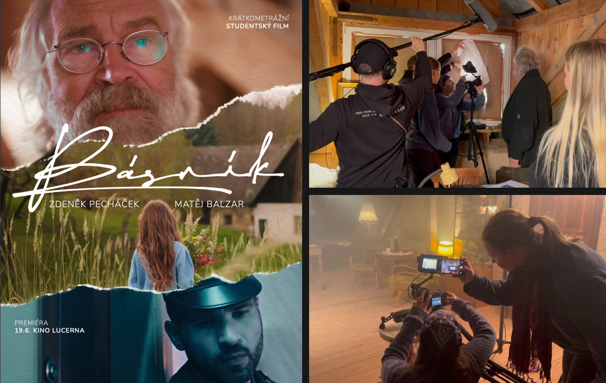

Na projektu jsem pracovala jako střihačka a podílela se na celém procesu výroby filmu včetně závěrečného zpracování. Ve střižně jsem pracovala hlavně s tempem scén, délkou záběrů a budováním napětí mezi jednotlivými momenty. Materiál jsme skládali podobně jako rytmus básně — některé scény zůstávaly dlouhé a tiché, jiné se naopak zkracovaly do rychlejších sekvencí podle emocí postav. Vedle střihu jsem se zapojovala také do průběžných kreativních rozhodnutí během produkce i postprodukce.
Studentský film Básník
Role
Střihačka
Předmět
Projekt audiovizuální komunikace
Semestr a ročník
LS 2025/2026, 3. ročník Bc.
Typ
Skupinový projekt
Oblast
střih, film, audiovizuální tvorba

Výzva
Cílem projektu bylo vytvořit krátkometrážní film od prvního námětu až po finální projekci. Pracovali jsme s omezeným časem, studentským rozpočtem a malým štábem, zároveň ale bylo potřeba udržet jednotnou atmosféru a rytmus vyprávění napříč celým filmem.
Řešení
Výsledek
Vznikl studentský krátkometrážní film „Básník", který prošel kompletním procesem filmové produkce od scénáře po veřejnou projekci. Výsledný film se promítal v kině Lucerna jako součást studentského uvedení.